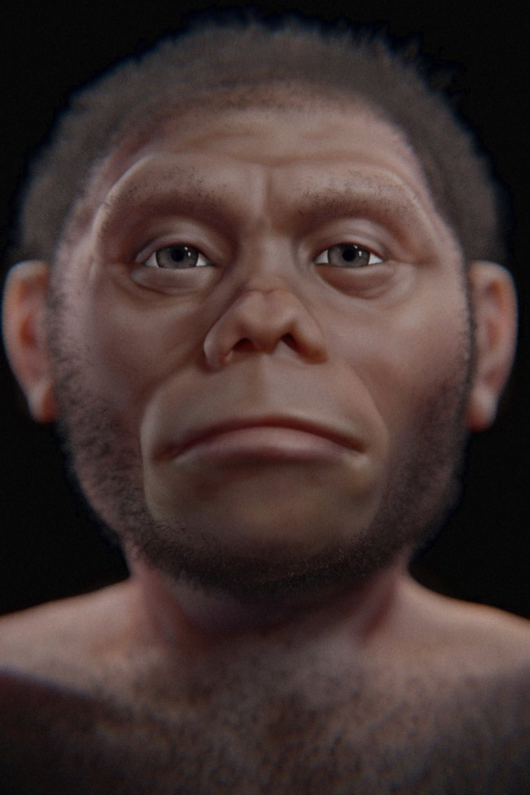

Facial approximation of Homo floresiensis
Photo/artwork by Cicero Moraes, via Wikimedia Commons, licensed under CC BY-SA 4.0. Cropped and resized for this site.
Homo floresiensis
A one-metre-tall human that hunted dwarf elephants on a lost island world.
Overview
Homo floresiensis — quickly nicknamed 'the Hobbit' — is one of the most surprising discoveries in palaeoanthropology. Found in 2003 on the Indonesian island of Flores, this tiny human stood barely a metre tall and had a brain the size of a chimpanzee's, yet survived until perhaps 50,000 years ago.
Its existence shows that the human family was far more diverse, and stranger, than anyone imagined.
Anatomy & Body
At ~106 cm tall with a brain of only ~400 cc, floresiensis was extraordinarily small. It had relatively large feet, primitive wrist and shoulder anatomy, and no chin. Many researchers attribute its size to insular dwarfism — the tendency of large mammals isolated on islands to evolve smaller bodies over generations.
Brain & Cognition
Despite the tiny brain, floresiensis was associated with stone tools and the hunting of substantial prey — a puzzle that, like Homo naledi, complicates any simple equation of brain size with capability. Endocasts show some reorganisation of the frontal lobe.
Behavior & Culture
On Flores, floresiensis made stone tools and apparently hunted dwarf Stegodon (a small elephant relative) and giant rodents, while avoiding Komodo dragons and giant storks. It inhabited a genuinely lost world of island-dwarfed and island-giant animals.
Key Fossils
- LB1 — a partial female skeleton with skull, the type specimen, from Liang Bua cave.
- Remains of several individuals plus much older, even smaller ancestral fossils from Mata Menge (~700,000 years).
Relationship to Us
H. floresiensis is a cousin, not an ancestor — most likely a dwarfed descendant of an early Homo population (possibly H. erectus) that became stranded and miniaturised on Flores. A nearby parallel, Homo luzonensis, was later found in the Philippines.
Discovery & history
In September 2003 a joint Indonesian–Australian team excavating Liang Bua, a large limestone cave on the Indonesian island of Flores, reached six metres down and found the skeleton of a small adult female. Specimen LB1 stood about 106 cm tall with a braincase of roughly 426 cc — smaller than a chimpanzee's — yet it was clearly not an ape, and it was not old: the layers around it were tens of thousands of years old, not millions.
The team, led by Mike Morwood and Thomas Sutikna, described it in Nature in 2004 as Homo floresiensis. The press immediately christened it "the Hobbit".
What followed was one of the ugliest episodes in modern palaeoanthropology. The senior Indonesian palaeoanthropologist Teuku Jacob, who disputed the new species, took the fossils to his own laboratory; when they were returned, several were damaged, including the pelvis and jaw.
The chronology has also been substantially revised. Initial reports suggested survival until about 12,000 years ago. A re-excavation published by Sutikna and colleagues in 2016 showed the original dates came from sediments that had been eroded and redeposited; the corrected range is roughly 60,000 to 50,000 years ago.
Debates & open questions
Was it a real species, or a sick modern human? This dominated the first decade of debate. Sceptics proposed in turn that LB1 was a modern human with microcephaly, with Laron syndrome, with endemic cretinism, or with Down syndrome. Each was tested and each has largely failed.
The strongest argument against pathology is that the primitive traits are not confined to the skull. LB1's wrist bones have a shape found in apes and early hominins but not in modern humans — and crucially, wrist morphology is laid down early in development and is not altered by the disorders proposed. The shoulder, foot and pelvis show the same pattern. A single sick individual might explain the small brain; it does not explain a skeleton that is primitive in several unrelated systems, nor the fact that multiple individuals from the cave are similarly small.
Where did it come from? Two live hypotheses. The first is island dwarfism: a population of Homo erectus reached Flores and shrank under the classic pressures of small islands — limited food, no large predators. The same island produced dwarf Stegodon elephants by the same process. The second is that floresiensis descends from something more primitive than erectus, a hominin that left Africa earlier and is otherwise unknown. The very primitive wrist and foot anatomy is hard to derive from erectus and pushes several researchers toward the second option.
Fossils from Mata Menge, about 700,000 years old, show small-bodied hominins were already on Flores long before Liang Bua.